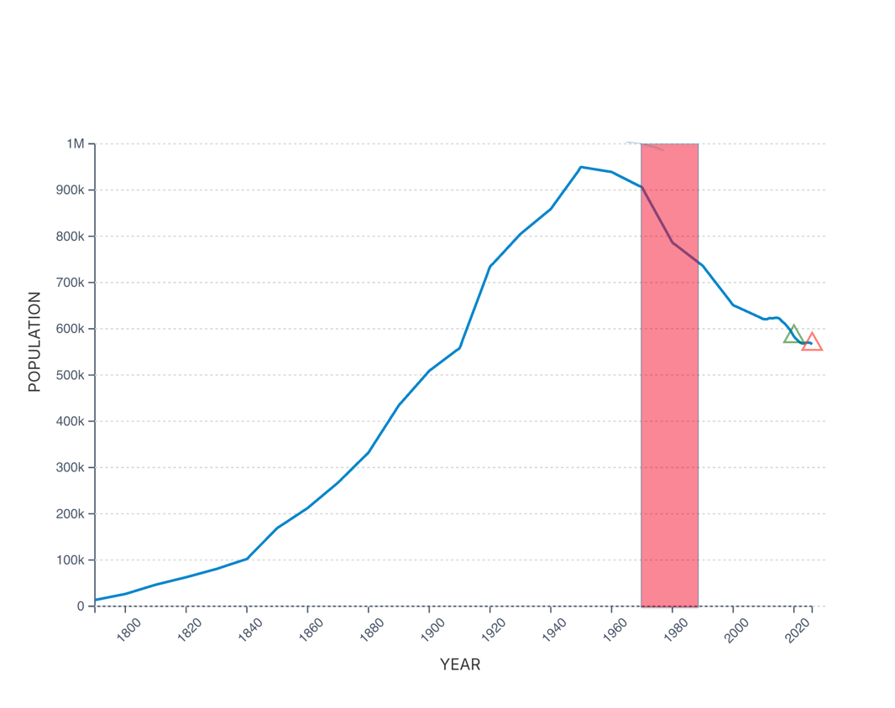
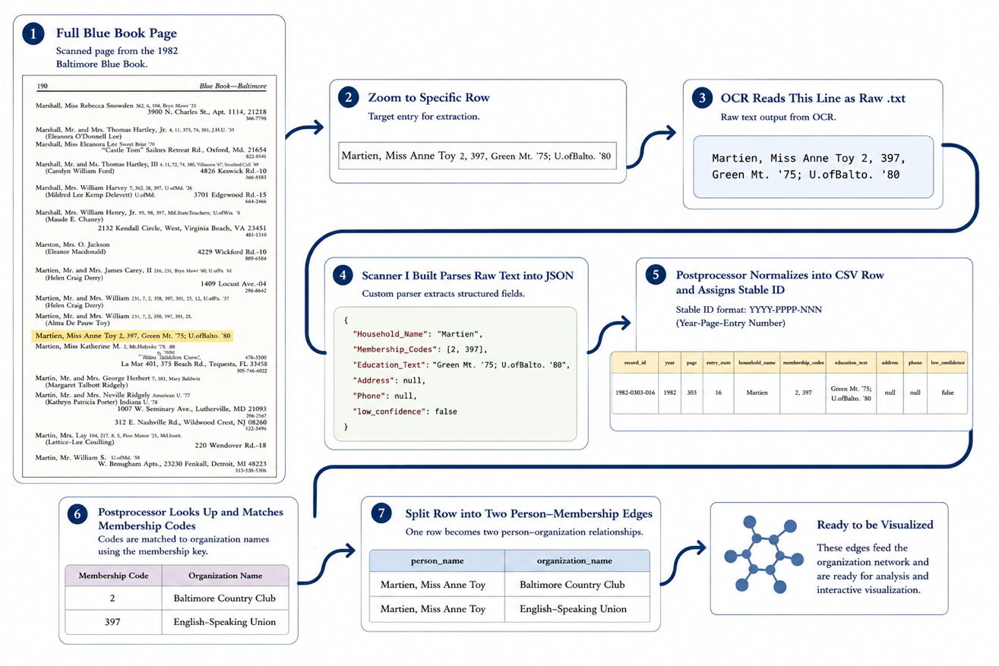
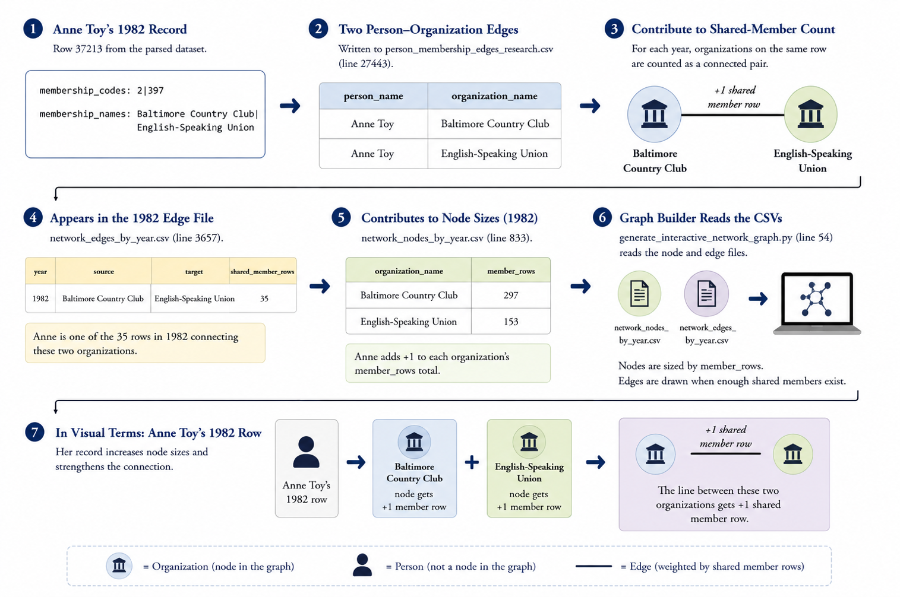
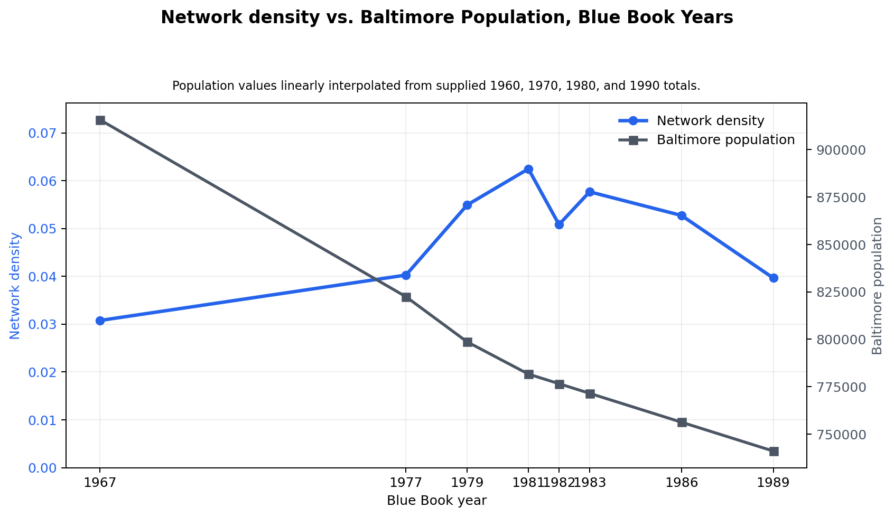
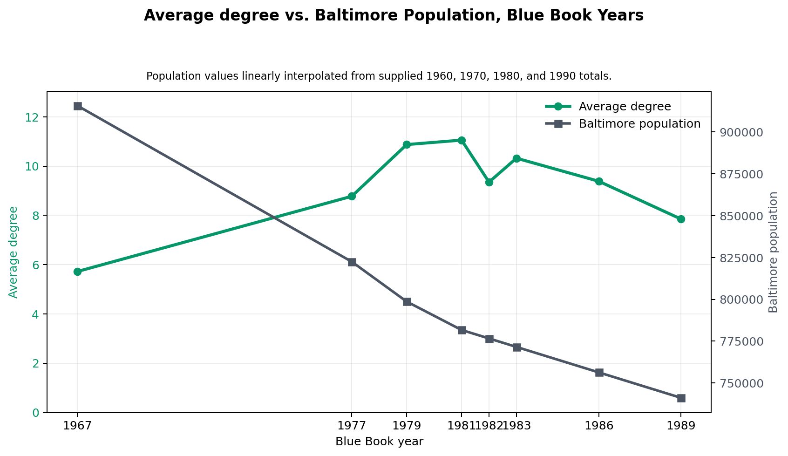

Baltimore's Elite Network: Mapping Social Connections Through Urban Decline (1967–1989)
James Burnard
CONTEXT AND MOTIVATION
Back in 2024, my sophomore year at UMass, an esteemed Economics professor agreed to let me assist him in his research endeavors. He was working on a massive social network analysis project which had led him to amass an enormous amount of Social Register books which he was aiming to digitize and eventually turn into clean data. I was specifically tasked with digitizing a variety of books from Baltimore, called Baltimore Blue Books using OCR technology.
The work itself was taking a picture of each individual page of a given book from front to back. As you might imagine, this was a mind-numbing task, and it took roughly 1-2 hours a day for two and a half months to complete scanning all 10 or so of my books. .
INTRODUCTION
“Voting with their feet, Baltimoreans continue to flee these
problems by the thousands.”
— Walters & Miserendino (2008)
Baltimore’s decline was far from inevitable, people at the time however couldn’t have disagreed more. In 1958, planners projected that the city’s population would grow steadily from 950,000 residents in 1950 to 1.2 million by 1980. Instead, Baltimore reached its population peak in 1950 and entered decades of decline driven by deindustrialization and broader economic change (Boone et al., 2014).
This transformation has been extensively studied from economic and demographic perspectives, but far less attention has been given to how it affected the city’s social and institutional networks. This project reconstructs Baltimore’s elite organizational landscape using the Baltimore Blue Books and Society Visiting Lists from 1967 to 1989, converting thousands of historical directory entries into a network of thousands of households, clubs, societies and civic organizations.
By examining how these connections evolved over time, the project provides a new perspective on whether Baltimore's elite institutions merely survived the city's decline or whether the relationships linking them together also changed.
THE DATA
As previously explained, all my data was taken from Baltimore Blue Books which contain Society Visiting Lists—social directories used by the upper-class families to navigate various social circles. The way I like to explain these books to people is by calling them a very early version of LinkedIn. The books contain tens of thousands of households of which contain the household-member names, each name lists the clubs/organizations they were a part of. Now unlike LinkedIn, the books are not constantly updating databases and for this reason, a new book would be published each year to accommodate any changes.
The professor had collected books from the following eight years:
1967, 1977, 1979, 1981, 1982, 1983, 1986, 1989.
These years are a solid spread of time, covering a near decade of the initial stages of Baltimore’s decline. I’ve included a graph to illustrate these years in the scope of Baltimore’s population statistics.

Figure 1. Historical population of Baltimore, Maryland (1790–2025). The shaded region highlights the period analyzed in this project (1967–1989), corresponding to the available Baltimore Blue Books and Society Visiting Lists. Source: Macrotrends (2025), based on U.S. Census Bureau data.
FROM BLUE BOOK TO DATA
The Baltimore Blue Books and Society Visiting Lists were never intended to be analyzed computationally. They exist only as scanned documents containing thousands of names, addresses, educational affiliations, and more. Before any analysis could begin, this information had to be transformed into a structured, research-ready dataset.
The pipeline began with approximately 4,500 scanned pages spanning eight editions of the Blue Book between 1967 and 1989. Each page was processed using Optical Character Recognition (OCR) to convert the printed text into a series of PDFs. From there, I built a custom parsing system to identify extracted key fields.
The fancy thing about the membership codes is that each code maps back to the membership key in the back of each volume. It essentially translated the numerical identifiers into over 230 distinct clubs and societies.
Finally, each household was converted into a set of person-to-organization relationships. Repeating this process across more than 53,000 household listings produced over 42,000 person-organization relationships, my data was analysis-ready.

Figure 2. Pipeline for converting a scanned Baltimore Blue Book entry into structured network data. The process moves from the original page image to OCR text, parsed JSON fields, normalized CSV rows, membership-code lookup, and final person-organization edges used for network visualization.
BUILDING THE NETWORK
I now had a structured dataset in place; the next step was to transform individual directory entries into a network that could be analyzed over time.
Each person in the dataset was treated as a connection point between organizations. If an individual belonged to multiple clubs or societies, those organizations were linked through a shared membership. When this process is repeated across thousands of entries, a graph is produced where nodes represent organizations and edges represent shared members.

Allow us to continue with our example entry from Figure 2, Miss Anne Toy. Miss Anne Toy is not a node, rather a connecting line between the two organizations she belongs to. Ideally, I’d make each person a node, but it would be impossible to plot in an organized manor.Figure 3. A single individual's memberships create connections between organizations. Repeating this process across thousands of directory entries produces the organization network analyzed in this project.
FINDINGS
The results of this project reveal information from the exact clubs/societies that are the most prevalent to the overall social landscape of these various periods of time. For brevity reasons, I’d like to focus on the latter. So, while Baltimore’s overall population is declining, the elite network appears to tighten through the late 1970’s and early 1980s, then loosen again by the late 1980’s.
The two key statistics to pay attention to here are average degree and network density
.

Figure 4. Despite Baltimore's steady population decline, organization network density increased through the late 1970s and early 1980s before declining by 1989, indicating that social connectivity did not mirror demographic change.
Network density asks: Of all the lines that could exist between organizations, what fraction exists? This figure is then displayed as a decimal, a density of .01 means that about 1% of possible organization pairs are connected. In figure 4 you can see that density is the inverse of Baltimore’s overall population, but it eventually ends up parallelling the decreasing population line.
.

Figure 5. Despite Baltimore's steady population decline, organization network density increased through the late 1970s and early 1980s before declining by 1989, indicating that social connectivity did not mirror demographic change.
Average degree is a lot easier to grasp conceptually. Degree is the number of organizations that one organization is connected to. So average degree is simply the average of that number with all organizations considered. You can see that this statistic follows an incredibly similar pattern to network density.
The results suggest that Baltimore's elite organizational landscape did not simply decline alongside the city's population. While Baltimore experienced sustained demographic and economic challenges, the network of clubs, societies, and civic organizations initially became more interconnected during the late 1970s and early 1980s before weakening by the end of the decade. This indicates that institutional persistence and social connectivity followed a more complex trajectory than population decline alone would suggest.
More broadly, this project demonstrates the value of combining OCR, data engineering, and network analysis to unlock insights from historical documents. What once existed only as thousands of printed directory pages can now be explored as an interactive network, offering a new perspective on how Baltimore's social fabric evolved during a period of significant urban transformation.
REFERENCES
Boone, C. G., Fragkias, M., Buckley, G. L., & Grove, J. M. (2014). A long view of polluting industry and environmental justice in Baltimore. Cities, 36, 41–49. https://doi.org/10.1016/j.cities.2013.09.004
Macrotrends. (2025). Baltimore Population 1790–2025. Retrieved from https://www.macrotrends.net/global-metrics/cities/22956/baltimore/population
Walters, P., & Miserendino, D. (2008). Why Baltimore Burns. The Nation. Retrieved from https://www.thenation.com/article/archive/why-baltimore-burns/
Baltimore Blue Book and Society Visiting Lists (1967, 1977, 1979, 1981, 1982, 1983, 1986, 1989). Baltimore, MD.